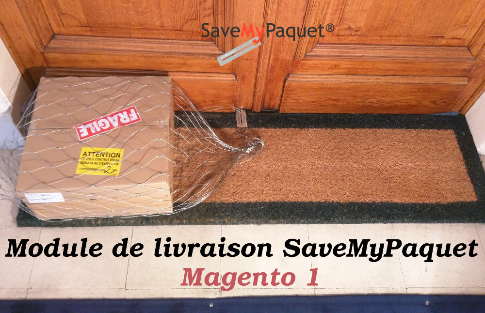
Évolution de la documentation
| Version | Nature des changements | Date |
|---|---|---|
| 1.0 | Création du document (Ahmed MAHI – eComTech ) | 19/02/2018 |
Table des matières
Présentation
Ce document est destiné aux e-commerçants qui souhaitent intégrer le mode de livraison SaveMyPaquet dans leurs site e-commerce basé sur Magento 1, il explique comment installer, configurer et utiliser le module de livraison.
Compatibilité et pré requis.
- Magento versions de 1.4 à 1.9.
- PHP version supérieur ou égale à 5.6
- PHP cURL et JSON activées sur votre serveur, pour pouvoir se connecter à l’API SaveMyPaquet.
Les fonctionnalités du module.
- Proposer à vos clients le mode de livraison Save My Paquet, facilement intégrable a votre canal de vente.
- Permettre de récupérer les coordonnées clients supplémentaires: mobile, bâtiment, étage, position de la porte, digicode...nécessaires au livraison SaveMyPaquet.
- Une interface client ( via le compte client Magento) qui permettre la traçabilité des colis en ligne sans passé par le site SaveMypaquet
- Tarifs intégrés par défaut dans le module sans aucune intervention de votre part.
-
Possibilité de modifier les tarifs facilement et ajouter des règles de calcules de ces derniers:
-
gratuit
-
prix fixe
-
variable proportionnellement au montant de la commande
-
variable par palier en fonction du poids ou le montant de la commande.
-
-
Une interface back-office pour :
-
gérer les types de livraison, il existe 3 types de livraisons que vous pouvez les activé/désactive, modifier le nom et règle de calcule de prix.
-
gérer les frais de livraison.
-
envoyer des demandes de prise en charge des colis.
-
imprimer les étiquettes des colis envoyé à Save My Paquet.
-
suivre et mise à jour les statuts des colis.
-
annuler les colis.
-
2. Installation du module
2.1 Installation manuelle
Décompressez l’archive du module, copier le contenu du dossier du module dans le dossier principal Magento
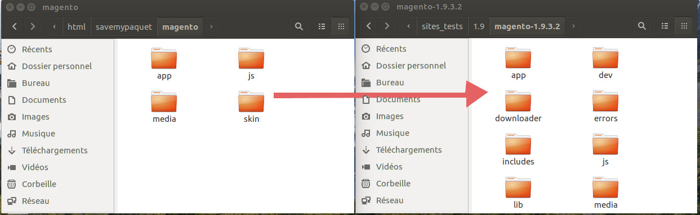
Si votre site utilise le cache Magento, pour terminé l’installation vous devez vider le cache manuellement depuis le Back-Office de Magento, menu Système > Gestion du cache.
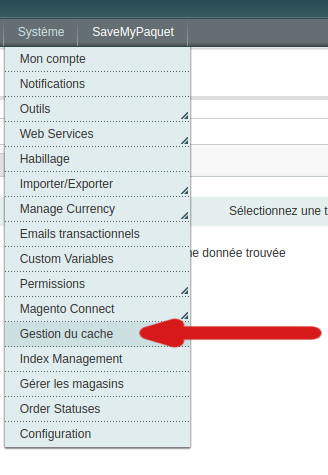
Dans la page qui s’ouvre, cliquez sur "Sélectionner tout" cela sélectionne tout les types de cache
Dans la zone "Actions", sélectionnez "Rafraîchir" puis cliquez sur "Soumettre".
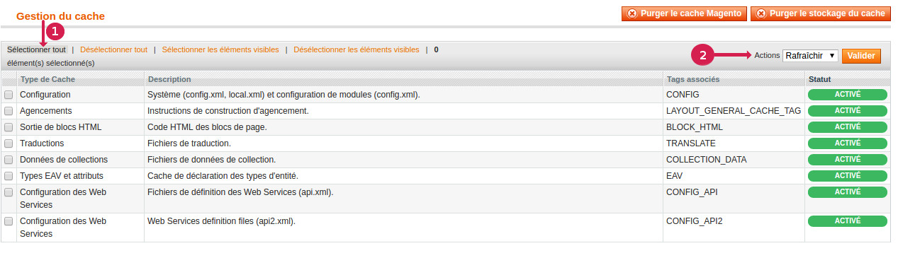
2.2 Installation automatique
Pour l’instant le module n’est pas encore disponible dans "Magento Marketplace"
Une fois le module installé, vous allez remarquer l’ajout d’un menu principale "SaveMyPaquet"
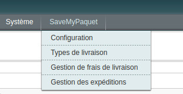
3. Configuration du module
Vous devez maintenant procéder à la configuration du module en cliquant sur le menu :
SaveMyPaquet > Configuration.
Cela va vous envoyer directement vers la configuration des modes de livraison, un nouveau transporteurs apparaissent dans la liste des modes de livraison installés sur Magento il s’agit de "Livraison SaveMyPaquet ".
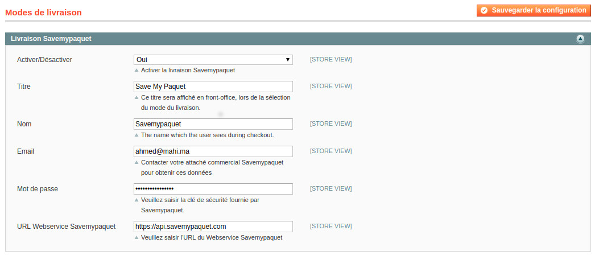
3.1 Options de base
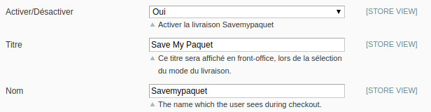
| Activer/Désactiver : | Pour activer/désactiver le mode de livraison Save My Paquet |
| Nom et Titre : | Ces deux infos serons affiché en front-office, lors de la sélection du mode du livraison. |
3.2 Options de connections a l’api SaveMyPaquet
Il s’agit des 3 éléments nécessaires à l’accès à L’Api SaveMyPaquet
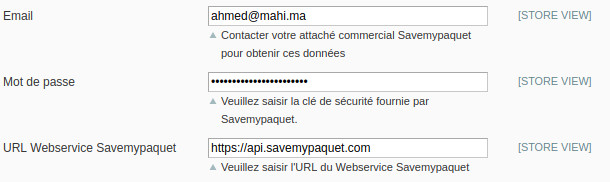
| Email : | Votre email d'identification Save My Paquet |
| Mot de passe: | Le mot de passe fournie par Save My Paquet. |
| URL Webservice Save My Paquet : | L'URL de base du Webservice Save My Paquet |
4. Configuration des types de livraisons
Trois types de livraison fourni avec le module:
- Optimum en 48 H 2.
- Premium avec suivi et photo comme preuve de livraison en 48 H 3.
- Premium Fast avec suivi et photo comme preuve de livraison en 24 H
Pour chaque type de livraison vous avez la possibilité de:
-
Activé / désactivé le type de livraison
-
Modifier le délai ( le titre )
-
Définir le mode de calcule du prix et sa valeur:
-
gratuit
-
prix fixe
-
variable proportionnellement au montant de la commande
-
variable par palier ( par rapport au poids ou montant de la commande )
-
La configuration des Types de livraison s'effectue depuis le menu :
SaveMyPaquet > Types de livraison
Vous accédez alors à une grille standard regroupant les trois type de livraison,
ainsi vous pouvez modifier les types de livraison,
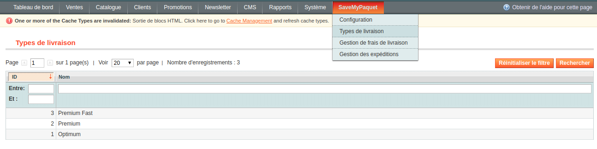
ainsi vous pouvez modifier les types de livraison,
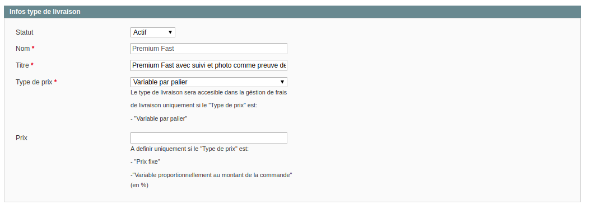
5. Gestion de frais de livraison
Vous pouvez utiliser les frais de livraison de Save My Paquet fourni par défaut avec le module, ou spécifier vos propres frais de livraison, la configuration s'effectue depuis le menu :
SaveMyPaquet > Gestion de frais de livraison
Vous accédez à la liste de toutes les règles de frais de port, vous pouvez filtrer cette liste sur les différents champs présents.
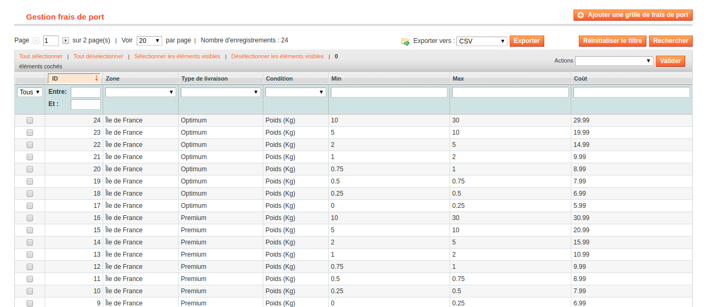
et vous pouvez donc ajouter, supprimer et modifier les grilles de frais de port par rapport au poids ou le montant de la commande, les types de livraison précédemment configurés et les zones ( pour l’instant zone géographique limitée sur l’île de France ).
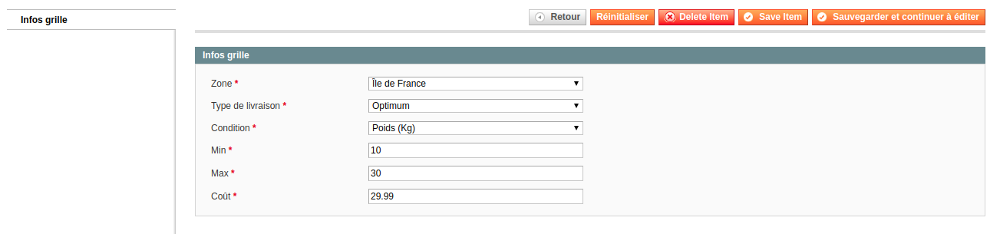
6. Front-office
Lors du passage de la commande, si SaveMyPaquet est activé et la zone géographique du client correspond, le mode de livraison sera disponibles et les types de livraison activés s‘affichent,
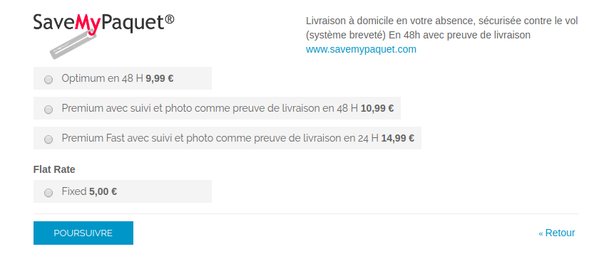
a la sélection du type de livraison un formulaire s‘affiche dessous, pour permettre au client d’ajouter les informations supplémentaires nécessaire.
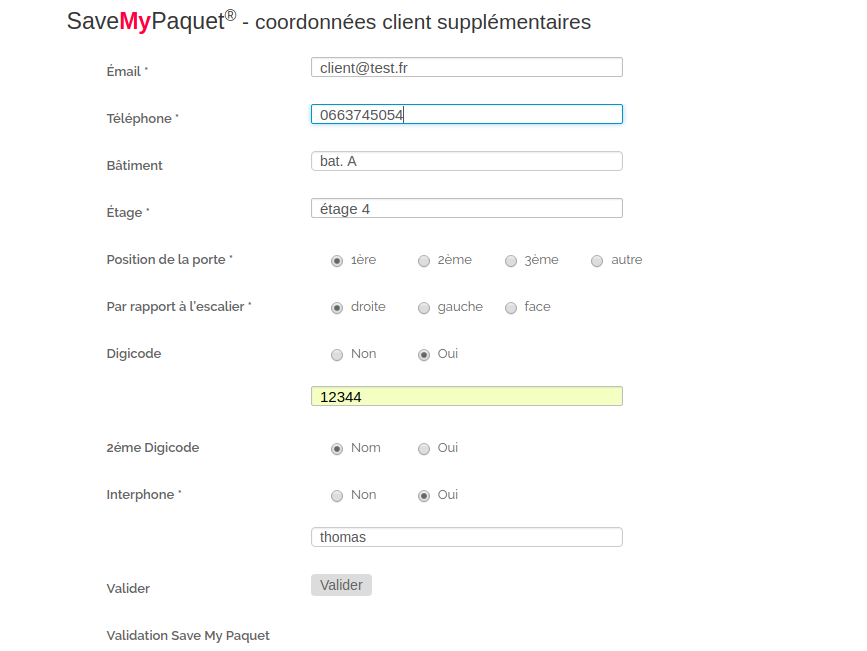
7. Gestion des expéditions en back-office
Un clic sur le sous menu de Magento "Gestion des expéditions" permet la visualisation de la liste des commandes en cours avec le mode de livraison SaveMyPaquet.
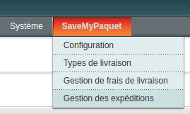
Les informations de commande : date, nom, poids, montant, statut de commande/colis, et type de livraison sont visibles. Vous pouvez filtrer les commandes en utilisant tout les champs présents, les commandes qui ne sont pas encore envoyé a SaveMyPaquet ont un statut "Non traité" , vous pouvez changer la valeur du poids lors de l’envoi du prise en charge,
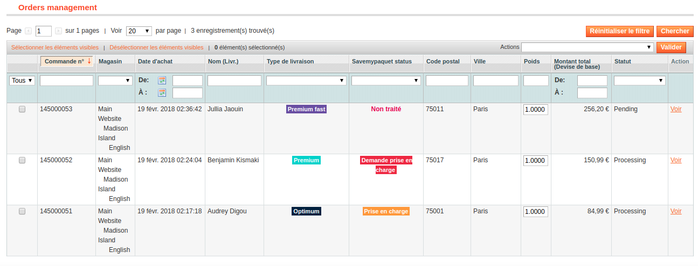
Pour traiter les commandes, sélectionnez les commandes à traiter avec la case de gauche, puis sélectionnez une action dans la liste déroulante Actions en haut à droite du tableau :
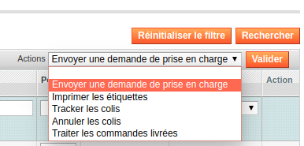
Envoyer une demande de prise en charge
Cette action envoi une demande de création de colis pour chaque commande de la liste des commandes sélectionnés, si la commande n’a pas encore d’expédition Magento elle sera crée automatiquement.
Un message indiquant la création de l’expédition, l’envoi réussi et les informations du colis :
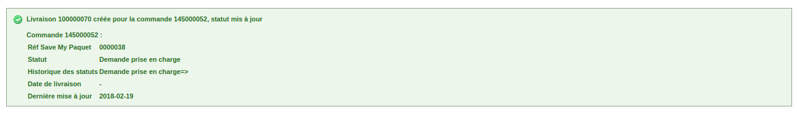
Les informations retournés par SaveMyPaquet son stocké dans la BD sous forme d’attributs commande:
- Le numéro unique SaveMyPaquet associé au colis.
- Code barre SaveMyPaquet associé au colis
- Le statut du colis.
Le statut de la commande va devenir "En cours de traitement" et une note commande sera envoyer au client avec un lien de suivie du colis.
En backoffice :
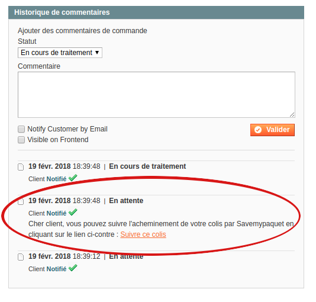
Dans l’espace client :
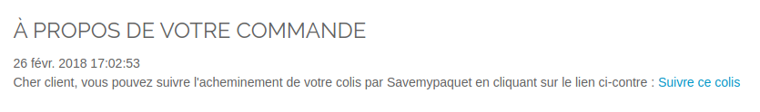
Tracker les colis
Cette action permet de suivre les colis des commandes, il permet aussi la mise à ajour du statut du colis dans la BD Magento.
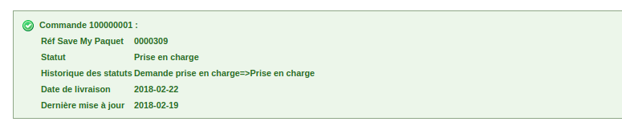
Imprimer les étiquettes
Pour générer un seul pdf avec la concaténation des étiquettes des colis des commandes sélectionnés.
Les étiquettes sont récupérés depuis l'api Save My Paquet au format A5.
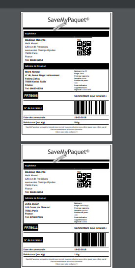
Traiter les commandes livrées
Cette action permet de mettre à jour le statut des commandes ( colis ) sélectionnées au statut traitée, cela uniquement pour les colis avec un statut livré dans le système Save My Ppaquet, il permet aussi de ne plus voir la commande en question dans la Gestion des expéditions.
Annuler les colis
Cette action permet d’annuler le colis chez Save My Paquet, Attention cette action est irréversible et il permet aussi de ne plus voir la commande en question dans la Gestion des expéditions.
8. Suivi de colis dans l’espace client.
Votre client peut suivre son colis avec un simple clic sur le lien de la commentaire crée lors de l’envoi de la prise en charge de la commande dans l’espace client

| Document réalisé par Ahmed MAHI - eComTech | Consultant Technique Web, E-commerce Et Mobile |
| Module de livraison SaveMyPaquet – Magento 1 -Version 1.0 |